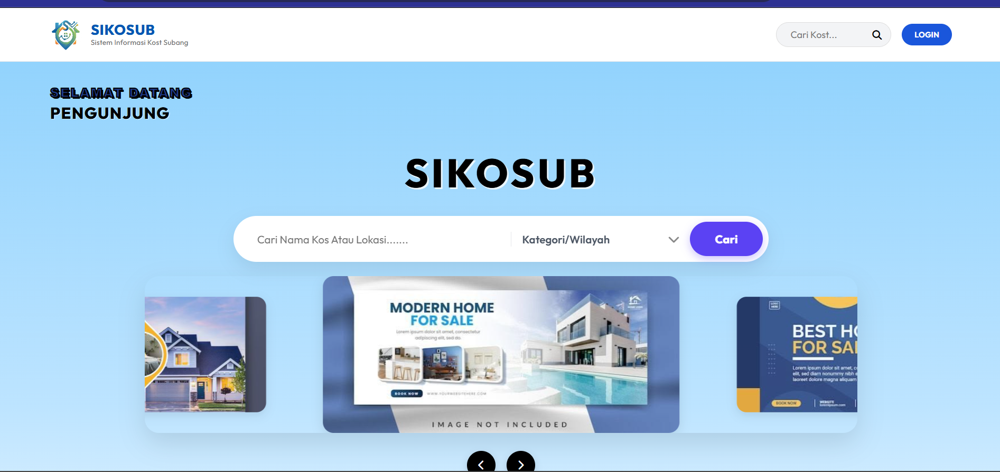
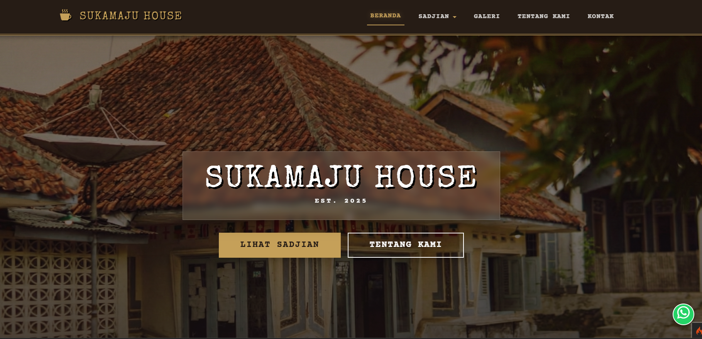
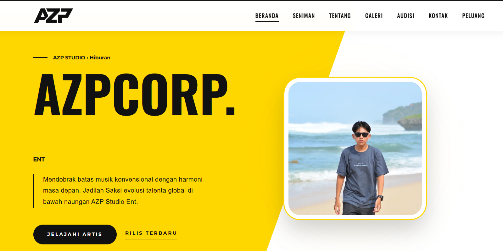

Fokus:
Mahasiswa SI yang mendedikasikan diri untuk merajut baris kode sesuai kemampuan, antarmuka interaktif yang keren dan responsif, dan Design Yang lucu lucu. Siap membantu menyelesaikan misi digital layaknya Super Hero Spiderman!
2+ THN
Pengalaman
2+ WEB
Proyek Sukses
10%
Komitmen & Passion

Aplikasi web CRUD lengkap untuk Pencarian Kost Di Kota Subang

Website profil caffe Sukamajou House dengan tema vintage yang responsif menggunakan CodeIgnitur4

Web Profil Identitas Company Entertaiment yang mencakup daftar artis yang dikelola dan musisi, aktor besar
Penerbit Sertifikat
Playlist pilihan yang menemani setiap Pojek yang disusun. Tekan tombol Play untuk mendengarkan!

Dato' Sri Siti Nurhaliza • TRACK